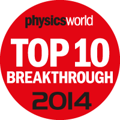

Research Interests
The primary focus of the Photonics Research Group, headed by Dr. Arash Mafi, is on the application of theoretical, computational, and experimental methods for cutting-edge research in photonics, especially on nonlinear and quantum aspects of guided-wave optics. The research focuses on integrating fundamental science and application at the intersection of quantum nonlinear optics and complexity. The research group has access to advanced computational and experimental facilities at the Center for High Tech Materials and Department of Physics & Astronomy at the University of New Mexico and benefits from several on-going collaborations with other academic institutions and industry.
- Optics and photonics: Theoretical, computational, and experimental; Guided-wave and fiber optics.
- Image transport using transverse Anderson localization; Wave propagation in random media.
- Laser and nonlinear properties of Anderson localization optical fibers.
- Quantum and nonlinear behavior of optical waveguides.
- Entangled pair generation in optical waveguides for quantum communications.
- Solid-state laser cooling of glasses.
- High power fiber lasers: Radiation-balanced fiber lasers.
- Linear and nonlinear multimode interference devices.
- Gain-guided index-antiguided fiber lasers and amplifiers; Beam quality analysis.
- Optical communications.
Background
Professor Arash Mafi earned his Ph.D. in theoretical high energy physics from The Ohio State University in 2001. Following postdoctoral appointments at the University of Arizona in Physics and The Optical Sciences Center, he joined Corning Incorporated as a Senior Research Scientist working on optical fibers and liquid crystal displays. He moved to the University of Wisconsin-Milwaukee in 2008, where he was an Associate Professor of Electrical Engineering and Computer Science, before joining the University of New Mexico in 2014. He is currently a Professor of Physics and Astronomy.
Prof. Mafi served as the General Chair of the Optical Science and Engineering (OSE) Graduate Program in 2015 and has been the Director of the Center for High Technology Materials (CHTM) 2016-2021. Since July 2021, he has been serving as the Interim Dean of the College of Arts and Sciences.
He is a Fellow of Optica (formerly known as the Optical Society of America, OSA), a Fellow of the International Society for Optics and Photonics (SPIE), and a Senior Member of IEEE. He is also a recipient of the NSF CAREER Award in 2013. His research group's work on Anderson Localization was selected by Physics World of the Institute of Physics (IOP) as a Top 10 Breakthrough in Physics in 2014. Most recently, in 2020, his research group, in collaboration with Professors Sheik-Bahae, Tunnermann, and Schreiber demonstrated the first laser cooling of silica. His research focuses on integrating fundamental science and application at the intersection of quantum nonlinear optics and complexity. In recent years, he has mainly explored the quantum and nonlinear aspects of light-matter interaction in complex and disordered photonic structures, both in fundamental science and device applications.
My curriculum vitae is also online, but may not be up to date.
News

|
- Mafi and colleagues receive a $2.5M award to establish a a Directed Energy Center.
- Research team demonstrates the first solid-state laser cooling of silica.
- Mafi named 2020 SPIE Fellow.
- Mafi named 2018 Optical Society Fellow, "for pioneering contributions to fundamental understanding of quantum and nonlinear behavior of optical waveguides, light propagation in disordered media and development of Anderson-localizing optical fibers."
- UNM scientists awarded $7.5 million for laser research.
- Physics World Top 10 Breakthrough 2014: Research team's work on using disordered fibers to transmit images has been selected by Physics World of the Institute of Physics (IOP) as one of their Top 10 Breakthroughs in Physics in 2014.
- Research team publishes first demonstration of image transport through Anderson localized fiber is published in Nature Communications, 5 3362 (2014).